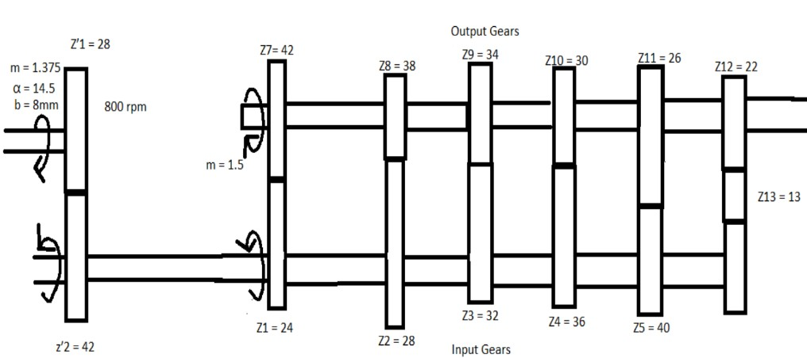
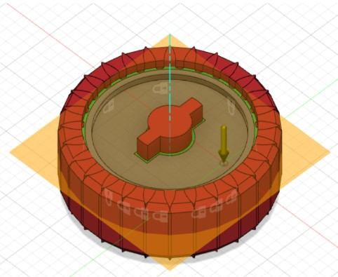

Generative Design
Generative Design of a Car Transmission System
AI-Driven Optimization & Design for Additive Manufacturing (DfAM)
A lightweight transmission redesign using generative algorithms, kinematic load modeling, and additive manufacturing to minimize mass while preserving structural integrity and functional performance.
Tools & Methods
The Lightweighting Challenge
Heavy rotating masses like gear wheels and transmission shafts drastically impact vehicle fuel consumption and greenhouse gas emissions. Traditional subtractive manufacturing methods severely limit weight reduction due to tool clearance constraints and standard wall thickness requirements.
To solve this, I applied generative design and additive manufacturing principles to engineer a highly optimized, lightweight transmission system for commercial 4 wheelers.

Mathematical load distribution diagram calculating rotational speeds and moments across the layshaft and output gears.Kinematic & Dynamic Load Modeling
Before applying generative algorithms, I established the exact operating environment. I calculated the dynamic torque and moment loads based on a 150 kW engine running at a minimum speed of 800 rpm. This ensured that the Artificial Intelligence had accurate boundary conditions to reinforce regions experiencing high Von Mises stress while stripping away unnecessary material.
AI Optimization & Preserved Geometry
The CAD assembly was exported to Autodesk Fusion 360 for generative design. I isolated critical kinematic features by creating preserved geometry for the gear teeth profiles and keyways, while establishing obstacle geometry to prevent the software from generating material in clearance zones. The algorithm was programmed with a factor of safety limit of 2 and a primary objective to minimize mass.

Defining design boundaries in Fusion 360, featuring preserved mechanical profiles (green) and obstacle geometry (red).Advanced Materials & Manufacturing
The software simulated 140 unique design permutations across various materials and fabrication constraints. I evaluated 3 axis milling, die casting, and unrestricted additive manufacturing. The study tested aerospace grade materials including AlSi10Mg and Aluminium 6061 to find the optimal balance of yield strength and manufacturability.
Unprecedented Mass Reduction
The generative design process yielded organic, highly efficient structures that maintained full structural integrity. Additive manufacturing utilizing AlSi10Mg was the recommended solution for 10 out of the 14 gears. The final optimized system achieved massive weight savings, with specific components like the Output Gear demonstrating starting 23.1 percent reduction in mass while successfully withstanding maximum operational loads.
Broader Industry Applications
- Aerospace & Space Exploration: Lightweighting satellite brackets and payload mounts to drastically reduce launch costs.
- Electric Vehicles: Optimizing motor housings and suspension links to offset battery weight and extend driving range.
- Medical Engineering: Generating porous titanium bone implants mathematically tailored to individual patient biomechanics.
- Industrial Robotics: Designing low inertia robotic arms and end effectors for faster, more energy efficient assembly lines.
- High-Performance Motorsports: Engineering organic, stress optimized chassis components and engine mounts for racing.
- Renewable Energy: Optimizing internal generator housings and mounting brackets to withstand dynamic wind turbine fatigue.
- Heavy Machinery: Reducing the mass of excavator arms and lifting hooks without compromising payload capacities.
- Marine Engineering: Designing hydrodynamically optimized structural frames for autonomous underwater vehicles.
- Bicycle Manufacturing: 3D printing custom generative bicycle frames to maximize stiffness to weight ratios.
- Consumer Electronics: Engineering generative heat sinks with complex, maximized surface areas for thermal management.
Read the full research or download the publication.
Explore the engineering study and access the publication PDF.